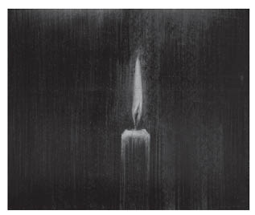

XI
Böylece iki hafta daha geçti. Bu sırada hem İvan İlyiç’in hem de karısının istedikleri, çoktandır bekledikleri bir şey oluverdi. Petrişçev, kızlarını resmen istedi. Bir akşamüstü gerçekleşti bu olay. Ertesi sabah Praskovya Fyodorovna, Petrişçev’in evlenme önerisini kocasına nasıl söyleyeceğini düşünerek odasına girdi. O gece İvan İIyiç’te daha da kötüleşmeye yüz tutan yeni bir değişiklik olmuştu.
Praskovya Fyodorovna onu divanın üstünde, ama başka bir durumda buldu. İvan İlyiç sırtüstü yatıyor, inliyordu; gözlerini tavana dikmişti. Karısı ilaçlardan söz açınca İvan İlyiç gözlerini ona dikti bu sefer, kadının lafı ağzında kaldı. Kocasının bakışı, özellikle ona karşı, büyük bir kinle doluydu.
“Tanrı aşkına, bırak beni rahat öleyim,” dedi İvan İlyiç.
Praskovya Fyodorovna odadan gitmek için davrandı, tam o sırada kızı içeri girerek hatırını sormak amacıyla babasının yanına yaklaştı. İvan İlyiç ona da karısına baktığı gibi baktı. Kızının sağlığını sormasına karşılık, soğuk bir sesle, yakında kendisinden kurtulacaklarını bildirdi. Onun söylediklerine karşılık vermediler; biraz oturduktan sonra sessizce çıktılar.
Liza, “Bizim ne suçumuz var?” dedi annesine. “Sanki onu bu duruma sokan biziz... Babam için üzülüyorum, ama onun bize acı çektirmesi doğru mu?”
Doktor her zamanki saatinde geldi. İvan İlyiç, kin dolu gözlerini bu sefer ona dikip bütün sorularına kısaca “Evet” ya da “Hayır” diyerek karşılık verdi. En sonunda, “Elinizden bir şey gelmeyeceğini biliyorsunuz. Bırakın beni artık,” dedi.
“Acıları hafifletebiliriz hiç olmazsa.”
“Onu da yapamıyorsunuz. Bırakın...”
Doktor dışarı çıktı. Praskovya Fyodorovna’ya kocasının durumunun iyice bozulduğunu söyledi. Acılar son derece şiddetlenmiş olmalıydı, dindirmek için tek çare morfindi.
Doktorun bedensel acıların korkunç olduğunu söylemesi bir gerçekti. Ama hastanın çektiği manevi acılar, bedensel acılardan kat kat fazlaydı. Bugün ıstıraptan kıvranmasının asıl nedeni de buydu.
İvan İlyiç’in manevi acılarının bir nedeni vardı. O gece ayakucunda uyuyan Gerasim’in çıkık elmacıkkemikli, uysal yüzüne bakarken aklına birdenbire şu düşünce gelmişti: “Ya bütün hayatım, yaşadığımın bilincinde olduğum bu hayat, gerçekten olması gerektiği gibi değilse?”
Şimdiye dek olmayacağını sandığı şey, yani yaşamının gerektiği biçimde yaşanmamış olabileceği düşüncesi aklına yatmaya başladı. Kendisinden yüksekte olanların iyi saydığı şeylere karşı içinde uyanan belli belirsiz kıpırdanışlar, hani şu içinde uyanır uyanmaz kovmaya çalıştığı zayıf kuşkular doğru olabilirdi ve belki bunun dışındakiler gerçeğe aykırıydı! İşi de, yaşama düzeni de, aile anlayışı da, görev ve toplum ilişkileri de temelden yanlıştı belki de.
İvan İlyiç bu düşüncelere karşı kendisini savunmak istedi. Ama savunmasının ne kadar güçsüz olduğunu o anda anladı. Hem savunsa eline ne geçecekti? “Mademki gerçek bu, şu dünyada elime geçen nimetleri berbat ediyorum, üstelik bunları düzeltmeme de olanak yok, öyleyse niye boşuna uğraşıyorum?” dedi.
Sırtüstü uzandı, başından geçenleri başka bir gözle incelemeye koyuldu. Ertesi sabah önce uşağın, sonra karısının, sonra kızının, sonra da doktorun her davranışı, her sözü, o gece gözlerinin önünde beliren korkunç gerçeği doğrulamaktaydı. Bütün bu hareketlerde kendisini, şimdiye dek nasıl yaşadığını gördü. Artık açıkça anlıyordu ki, yaşamı ve ölümü kapsayan korkunç bir yanlış işlemişti. Bunu anlaması bedensel acılarını artırdı, on katına çıkardı. İnliyor, çırpınıyor, üstünü başını paralıyordu. Giysisi onu sıkıyor, boğuyordu sanki; bu yüzden herkesten nefret ediyordu.

“Ya bütün hayatım, yaşadığımın bilincinde olduğum
bu hayat, gerçekten olması gerektiği gibi değilse?”
İvan İlyiç’e fazlaca afyon verdiler, çok geçmeden daldı, ama öğle yemeğinde bütün ağrıları yeniden nüksetmeye başladı. Herkesi yanından kovuyor, kendini yerden yere atıyordu. Karısı yanına geldi.
“Jean, canım,” dedi. “Benim için yap bunu... Benim için. Bunun bir zararı dokunmaz, çoğu zaman yararı bile olur... Sonra zor bir şey de değil... Çoğu sağlıklı kimse bile...”
İvan İlyiç’in gözleri belerdi.
“Ne?.. Priçastiye11 mi?Ne gereği var? İstemem... Ama bu...”
Karısı ağlamaya başladı.
“Yapılsın, değil mi canım? Bizim papazı çağırayım. Çok iyidir.”
“Peki. Yapın ne istiyorsanız...”
Papaz gelip günah çıkardığı zaman yatıştı, kuşkularından, dolayısıyla acılarından kurtulduğunu hissetti, içinde yeni bir umut ışığı parladı. Şimdi gene körbağırsağını, onun düzelme olasılığını düşünüyordu. Gözleri yaşla dolu olarak kutsal şaraplı ekmeği yedi.
Ayinden sonra yatırılınca bir süre daha hafif hissetti kendini, içinde yaşama umudu yeniden doğdu. Doktorların önerdiği ameliyatı düşünmeye başladı. İçinden, “Yaşamak istiyorum, yaşamak istiyorum,” diyordu. Karısı ayinin bitiminden sonra onu kutlayarak, “Şimdi daha iyisin, değil mi?” diye sordu.
İvan İlyiç onun yüzüne bakmadan, “Evet,” dedi. Karısının giyinişi, duruşu, yüz ifadesi, sesinin tonu ona hep aynı şeyi söylüyordu: “Hayır, hayır... Ne o zaman, ne de şimdi doğru olanı yaşadın. Bütün yaptıkların, hayatı ve ölümü senden uzak tutan kocaman bir yalandı.”
İvan İlyiç bunları düşünür düşünmez içindeki kin yeniden kabardı; kinle birlikte bedensel ağrıları, ağrılarla birlikte gittikçe yaklaşan ölüm korkusu depreşti. Yeni bir bunaltı çöktü yüreğine; içinden bir şeyler yükselmeye, soluğu daralmaya başladı. “Evet” derken korkunç bir görünüşü vardı. Gözlerini karısına dikerek zayıflığından umulmayan bir çeviklikle yüzükoyun döndü.
“Gidin, hepiniz gidin!.. Yalnız bırakın beni!..” diye bağırdı.
11 (Rus.) Günah çıkarma töreni sırasında yapılan şaraplı ekmek yedirme ayini. (ç.n.)